Cada creación es vertida a mano en pequeñas tiradas utilizando cera de soja vegetal pura, esencias botánicas de alta gama y mechas de algodón ecológico. Guarda tus favoritas para inspirar tu hogar.
Colección:
Color:
Formato:
Precio
Mostrando21de 21 creaciones artesanas
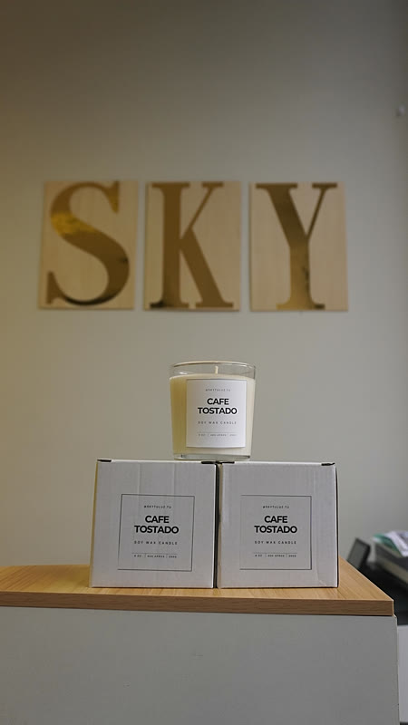
Gourmand de Autor
45h de combustión pura
Vasos Aromáticos · Café / Tostado
Café Espresso & Avellana Tostada
Intenso aroma a granos de café tostado, notas de avellana crujiente y fondo de vainilla de Madagascar.
Granos de café arábica tostadoAvellana tostadaVainilla bourbon
18€
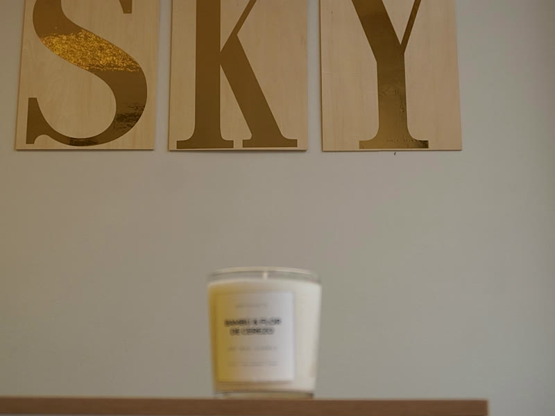
Zen Botánico
45h de combustión noble
Vasos Aromáticos · Verde / Bambú
Bambú Silvestre & Flor de Cerezo
Frescura verde de tallos de bambú japonés entrelazada con delicados pétalos de sakura y rocío matinal.
Hojas verdes de bambúFlor de cerezo (sakura)Madera de bambú claro
18€
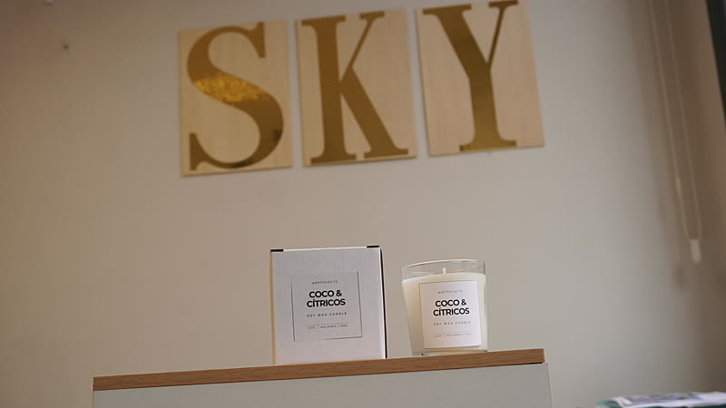
Cítrico Tropical
45h de llama limpia
Vasos Aromáticos · Blanco / Neutro
Coco de Tahití & Lima Cítrica
Ralladura de lima verde recién exprimida sobre leche de coco cremosa y un toque chispeante de verbena.
Ralladura de lima de TahitíPulpa de coco frescaVainilla suave
18€
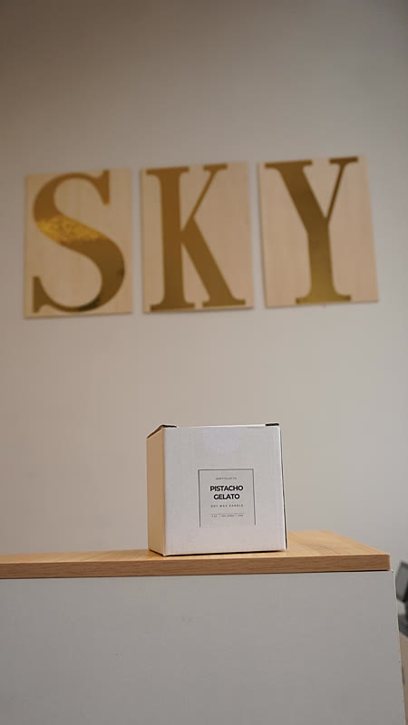
Edición Gourmet
45h de combustión dulce
Vasos Aromáticos · Verde / Menta
Gelato Cremoso de Pistacho
Pistacho siciliano molido, crema dulce de almendra amarga y sutiles acordes de mantequilla tostada.
Sensación reconfortante de sábanas blancas secadas al sol, flor de algodón y una ligera brisa de lavanda silvestre.
Brisa de montañaFlor de algodón blancoAlmizcle blanco transparente
18€
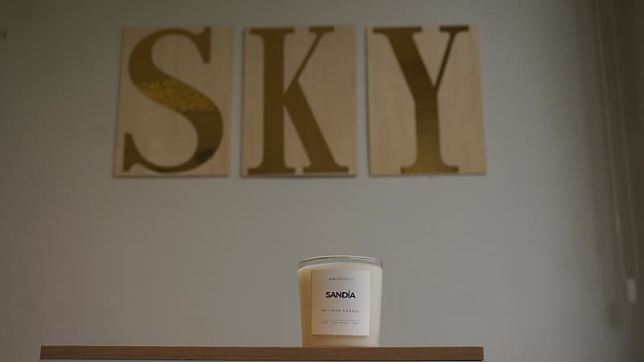
Frutal Festivo
45h de llama viva
Vasos Aromáticos · Rojo / Rubí
Sandía Fresca de Verano
Jugosa sandía roja recién cortada con notas de melón cantalupo, frambuesas silvestres y un toque mentolado.
Sandía roja jugosaMelón dulce cantalupoAzúcar glas suave
18€
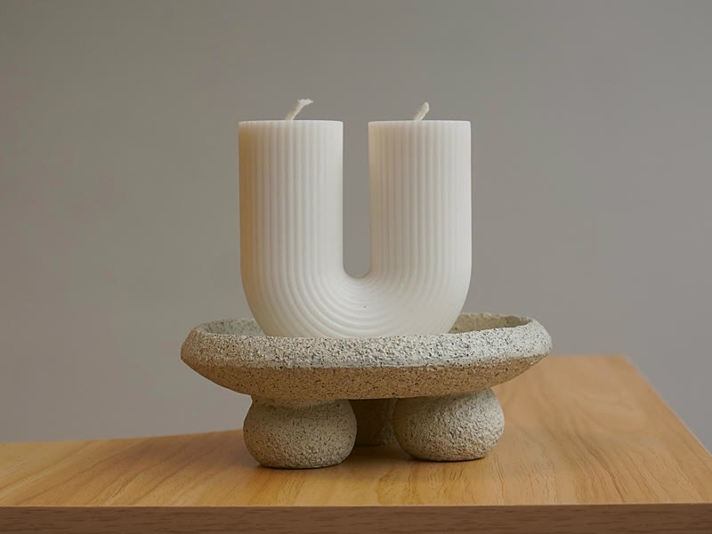
Diseño Arquitectónico
35h de diseño puro
Esculturales · Blanco / Neutro
Arco Escultural Nórdico
Pieza de diseño en forma de arco doble U. Notas sutiles de vainilla blanca natural y madera de haya.
Aire blancoVainilla suave aterciopeladaMadera de sándalo rubio
22€
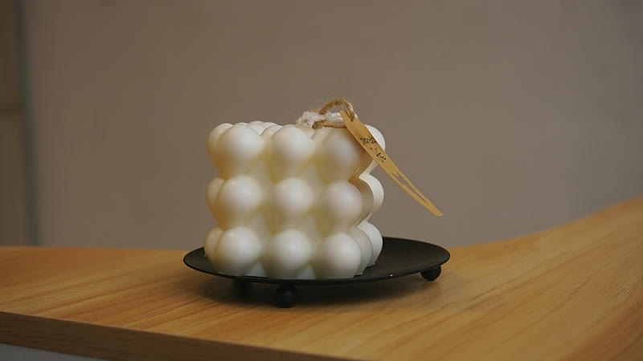
Tendencia Minimalista
30h de llama suave
Esculturales · Blanco / Neutro
Cubo Bubble Geométrico
Vela cúbica esférica elaborada con esferas de cera de soja. Fragancia equilibrada de jazmín blanco y algodón.
Rocío limpioJazmín de GrasseCera botánica cremosa
22€
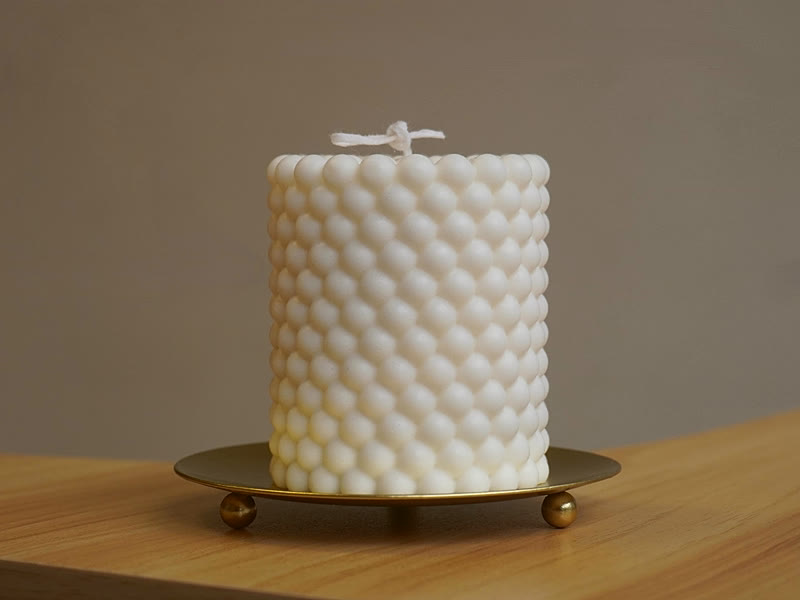
Elegancia Clásica
40h de presencia
Esculturales · Blanco / Neutro
Columna Cilíndrica Acanalada
Elegante vela cilíndrica con acanalado vertical de inspiración dórica y notas cálidas de cedro y flor blanca.
Brisa de montañaFlores blancas de almendroÁmbar seco
22€
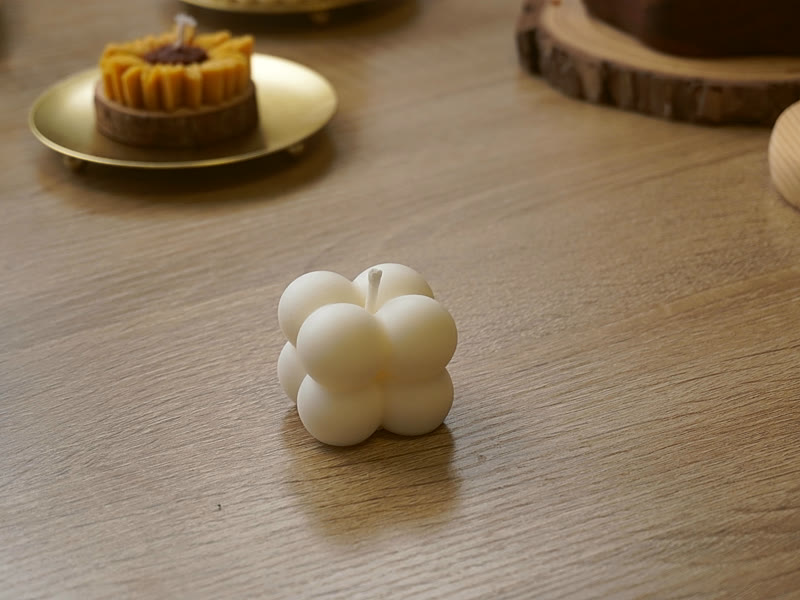
Escultura Floral
25h de floración
Botánicas · Blanco / Neutro
Camelia Botánica Nívea
Flor circular esculpida con pétalos concéntricos. Esencia delicada de camelia blanca, orquídea y flor de loto.
Pétalos de camelia blancaOrquídea silvestreAlmizcle blanco transparente
20€
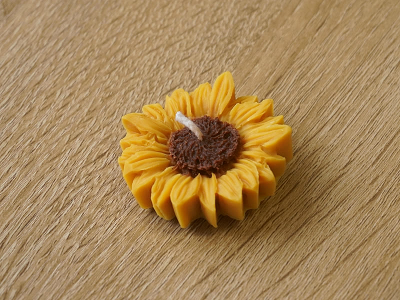
Luz & Vitalidad
25h de calor solar
Botánicas · Amarillo / Dorado
Girasol Silvestre del Valle
Vela de girasol con centro texturizado de semillas. Fragancia cálida de miel de flores, polen silvestre y ámbar.
Miel silvestrePolen floralCera de abeja botánica
20€
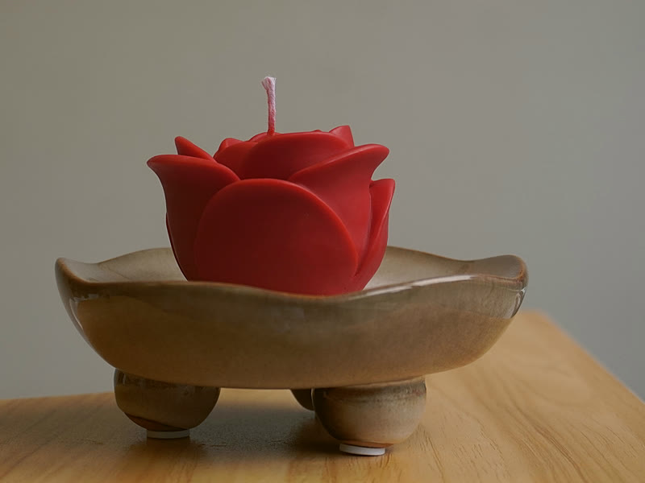
Pasión Botánica
25h de aroma envolvente
Botánicas · Rojo / Pasión
Rosa Carmesí Imperial
Rosa roja en plena floración con pétalos aterciopelados. Fragancia clásica de rosa damascena y toques de peonía.
Pétalos de rosa húmedosRosa damascena de BulgariaAlmizcle floral aterciopelado
20€
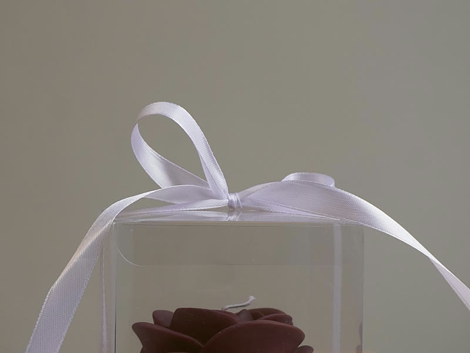
Edición Regalo
25h de encanto
Sets de Regalo · Rosa / Pastel
Rosa de Grasse en Estuche de Regalo
Elegante rosa pastel presentada en estuche especial para regalo con cinta de seda y aroma floral empolvado.
Agua de rosas de mayoRosa centifoliaVainilla suave
22€
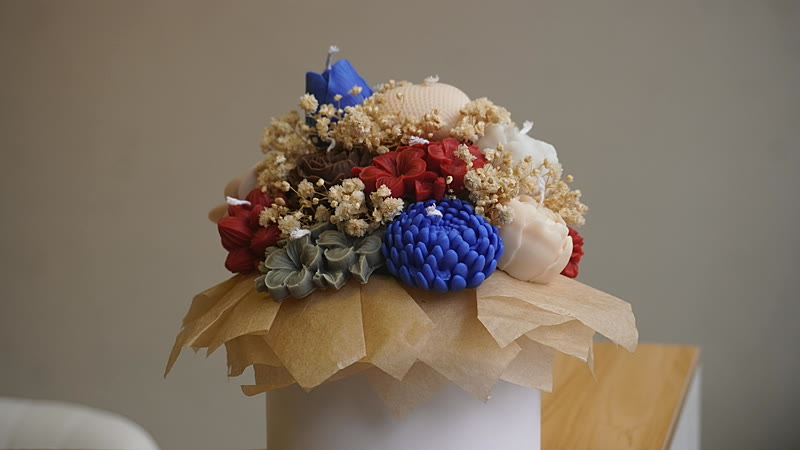
Centro de Mesa
50h de resplandor
Botánicas · Rosa / Pastel
Cúpula Floral Sinfonía de Primavera
Composición floral en cúpula con rosas, dalias y peonías multicolores con esencias de jardín botánico.
Brisa de jardín inglésPeonía rosaMaderas nobles
35€
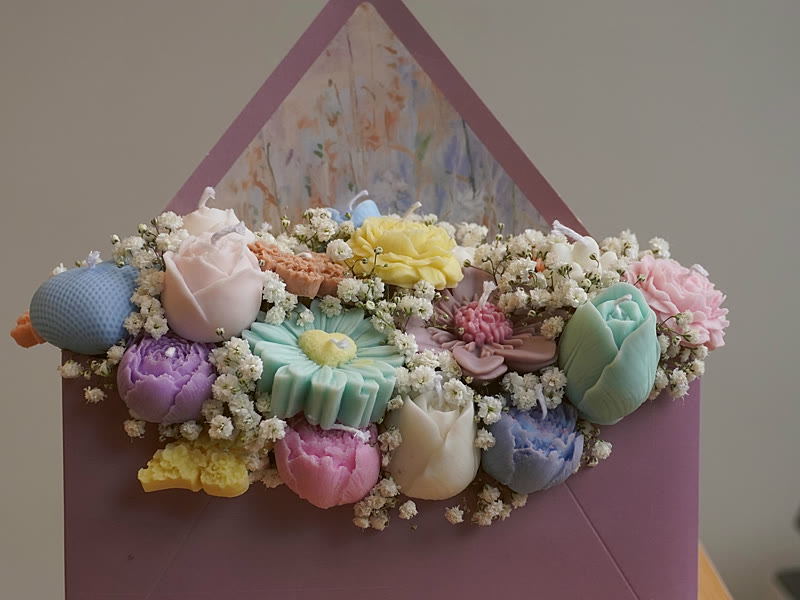
Diseño Poético
35h de poesía
Botánicas · Rosa / Pastel
Sobre Botánico Carta de Amor
Vela en forma de sobre postal abierto desbordando ramilletes de flores en relieve. Notas de lino, lirios y violeta.
Papel de lino blancoRosas miniaturaAlmizcle poético
20€
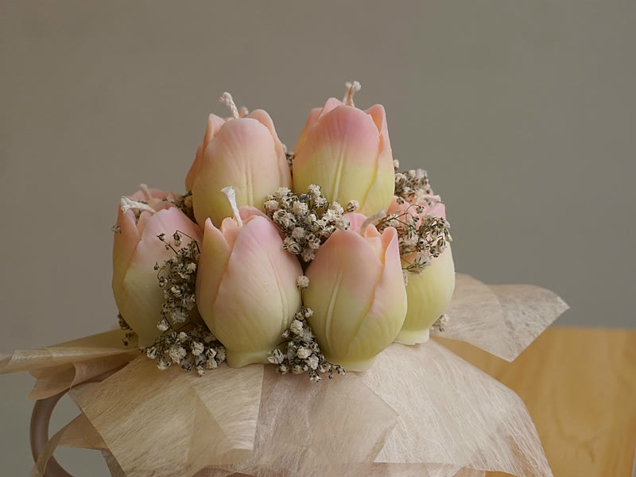
Pieza de Autor
45h de llama floral
Botánicas · Rosa / Pastel
Bouquet de Tulipanes Silvestres
Ramo de tulipanes rosa esculpidos con flores secas decorativas y aroma a tallos verdes y pétalos frescos.
Tallos verdes de tulipánTulipán rosa en florMusgo blanco
35€
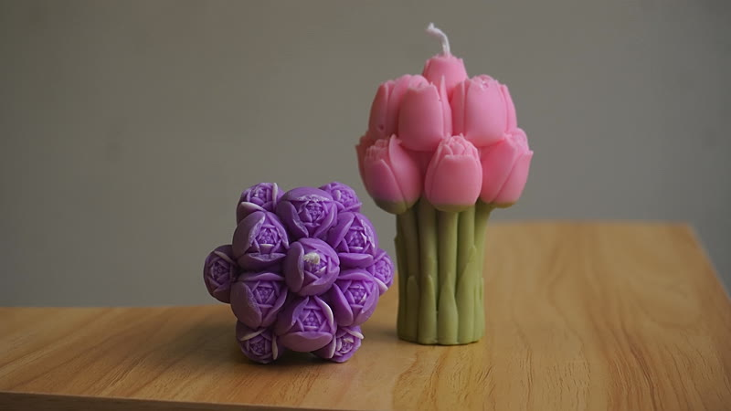
Edición Escultórica
55h de calma
Botánicas · Rosa / Pastel
Conjunto Armonía Tulipanes & Esfera
Composición de ramo de tulipanes en tonos pastel combinada con esfera aromática de cera de soja texturizada.
Flores de lotoTulipán holandésSándalo cálido
35€
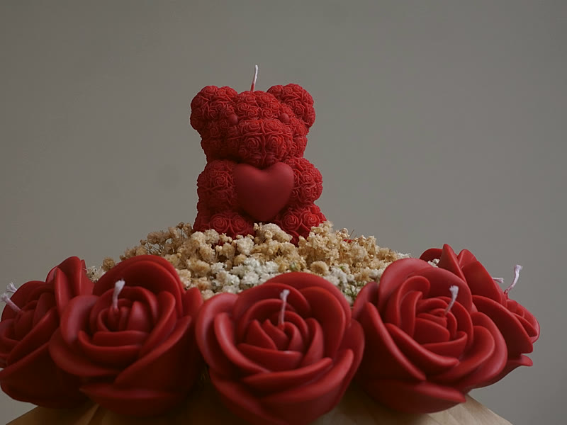
Edición Romántica
35h de ternura
Sets de Regalo · Rojo / Pasión
Oso Amoroso Carmesí con Bouquet
Tierno osito modelado en cera de soja roja sosteniendo un ramillete de rosas. Aroma a frutos rojos y pétalos dulces.
Grosella rojaRamillete de rosas rojasVainilla cremosa
28€
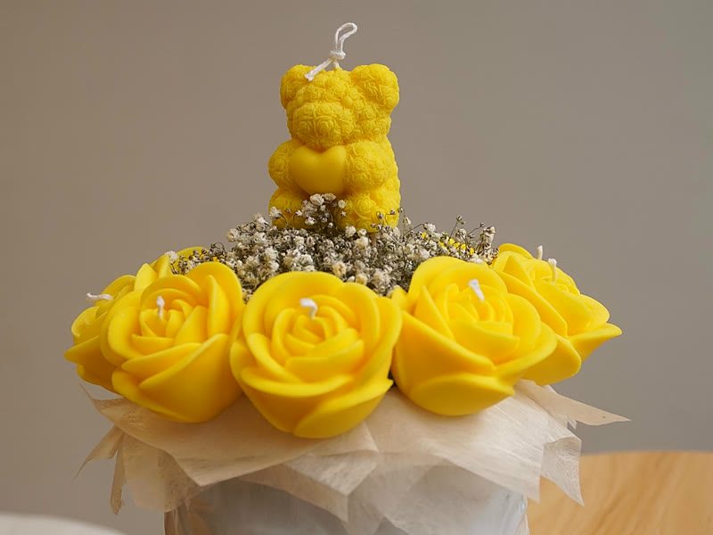
Alegría & Cariño
35h de calidez
Sets de Regalo · Amarillo / Dorado
Oso Solar Dorado con Bouquet
Osito de cera de soja en tono amarillo mostaza cálido con ramillete de flores. Notas dulces de miel, flor de azahar y vainilla.
Flor de azaharFlores silvestres amarillasVainilla bourbon
28€
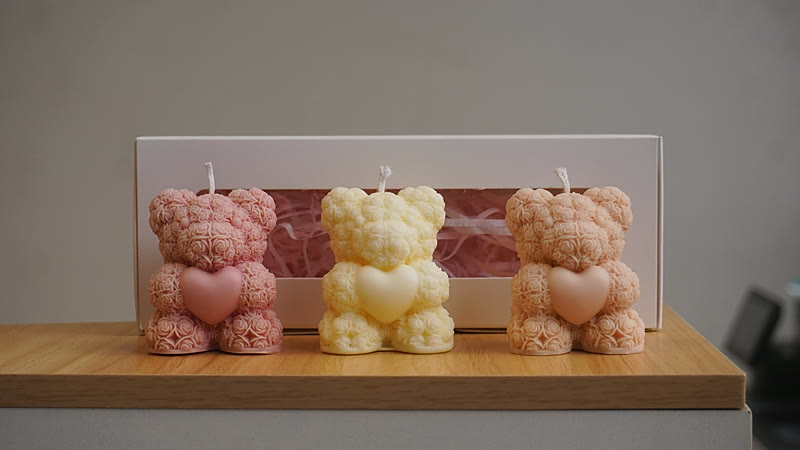
Set Trío de Regalo
3x15h de llama dulce
Sets de Regalo · Rosa / Pastel
Trío de Ositos Afecto Eterno
Set de tres ositos de cera de soja con corazón en relieve. Fragancia suave a talco de bebé, vainilla y flor de algodón.
Talco suave de bebéFlor de azaharVainilla dulce
45€
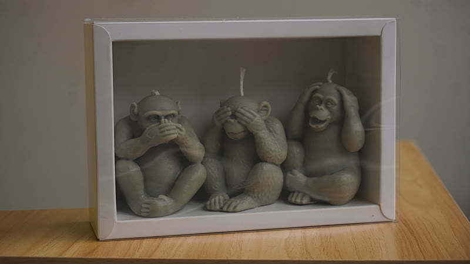
Filosofía & Sabiduría
3x20h de serenidad
Sets de Regalo · Café / Tostado
Set 3 Monos Sabios de la Sabiduría
Los tres monos sabios: No ver el mal, no oír el mal, no hablar el mal. Notas místicas de sándalo oriental, mirra y cedro.
Incienso blancoMadera de sándalo orientalMirra balsámica
45€
No encontramos velas con esos filtros
Prueba a cambiar los criterios de color, tamaño o borra la búsqueda.
Colecciones
Encuentra Tu Aroma Ideal
Velas Aromáticas
Aromas que transforman el ambiente de tu hogar con serenidad.
Piezas Personalizadas
Detalles únicos y velas con mensajes personalizados para momentos especiales.
Ediciones Botánicas
Colecciones de autor producidas en tiradas pequeñas y exclusivas.
100%
Cera Vegetal Natural
Hechas con alma
Artesanía, Amor & Cuidado en Cada Detalle
En Sky Tu Luz elaboramos cada vela a mano de forma artesanal. Seleccionamos cuidadosamente ceras vegetales de soya, esencias aromáticas puras de la más alta calidad y mechas de algodón ecológico. Ponemos alma en cada proceso para regalarte momentos inolvidables de calma y bienestar.
Hecho a mano
Ecológico
Aromas únicos
Propósito
¿Por qué elegir Sky Tu Luz?
Elaboración Artesanal
Vertidas a mano una a una con máxima dedicación y supervisión de calidad.
Ingredientes Botánicos
Sin parafinas ni tóxicos. Ceras de soya limpias para una combustión duradera.
Empaque Elegante
Presentaciones cuidadas ideales para sorprender con un regalo especial.
Experiencia Olfativa
Combinaciones de esencias pensadas para evocar emociones y recuerdos.
Testimonios
Lo Que Dicen Nuestras Clientas
"Las velas huelen increíble incluso apagadas. El ambiente que crean en el salón es cálido e inigualable."
Nerea A.
Clienta Verificada
"Encargué velas personalizadas como recuerdo y fue el regalo perfecto. La presentación cuidada al máximo."
Maialen R.
Clienta Verificada
"Se nota el cariño en cada detalle. La mecha arde de forma limpia y duradera. Repetiré sin duda."
Leire G.
Clienta Verificada
Te esperamos
Visítanos en Zumarraga
Sky Tu Luz Piedad Kalea 4 20700 Zumarraga, Guipúzcoa
Todo lo que necesitas saber sobre nuestras velas de cera de soja, elaboración artesanal y encargos.
¿De qué están hechas las velas de Sky Tu Luz?
Todas nuestras velas artesanales están elaboradas con cera de soja vegetal 100% pura y biodegradable, mechas de algodón ecológico sin plomo y esencias botánicas de alta concentración olfativa. No contienen parafinas, colorantes tóxicos ni derivados del petróleo, garantizando un aire limpio en tu hogar.
¿Cuánto dura una vela artesanal de cera de soja?
Nuestras velas tienen un tiempo de combustión lenta de entre 40 y 50 horas. La cera de soja tiene un punto de fusión más bajo que la parafina tradicional, lo que hace que arda hasta un 45% más de tiempo y libere el aroma de manera constante sin sobrecalentarse.
¿Dónde está ubicado el taller de Sky Tu Luz?
Nuestro taller y tienda se encuentra en Piedad Kalea 4, Zumarraga, Guipúzcoa. Estaremos encantados de recibirte para que descubras nuestros aromas en persona. Abrimos de lunes a viernes de 10:00 a 14:00 y de 16:30 a 19:30, y los sábados de 10:00 a 14:00.
¿Cómo puedo encargar una vela o solicitar piezas personalizadas?
Puedes explorar nuestro portafolio y pulsar en el corazón de las velas que más te gusten. Después, abre el panel de "Mis Favoritas" y pulsa en "Consultar Selección por WhatsApp" para enviarnos tu lista al instante. También creamos velas personalizadas con aromas a medida y mensajes especiales para bodas, aniversarios y regalos corporativos.
En directo desde el taller · Zumarraga
Donde la llama cobra vida
en @skytuluz.tu
Siente el hipnótico desmolde artesanal, el aroma de cera de soja vegetal recién vertida y las ediciones secretas antes de que lleguen a la web.
Sorteo en Marcha
Pack Trío Escultural
Comenta tu vela favorita en el último Reel fijado y sigue a @skytuluz.tu.
Story Secreta
Código 24h cada Miércoles
Publicamos en Stories un código para conseguir una mini-vela de cortesía en tu encargo.